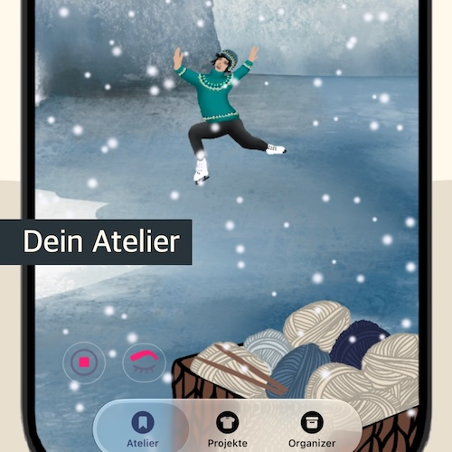
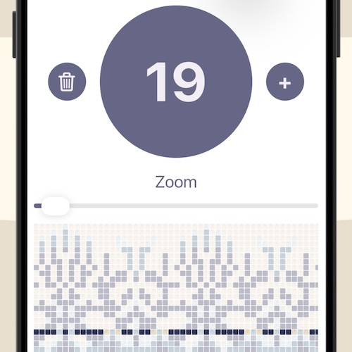
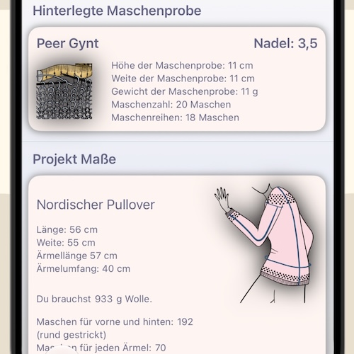
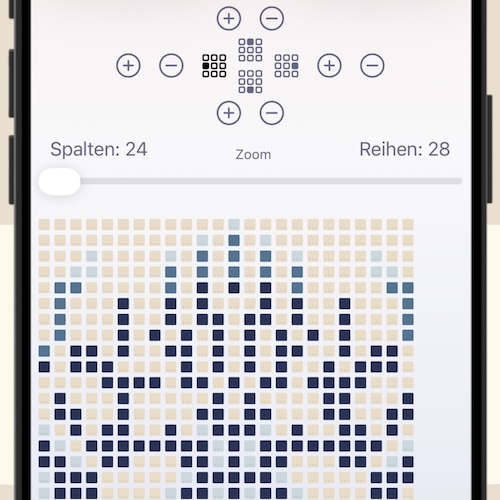

comming soon ...
Knitting Suite - Stricken ohne limits!
Stricken ist mehr als Maschen zählen. Es ist eine kreative Auszeit, ein ruhiger Moment im Alltag und die Möglichkeit, mit den eigenen Händen etwas Eigenes entstehen zu lassen.
Mit Knitting Suite entscheidest du, was du stricken möchtest, wie es aussehen soll und welche Farben und Muster du verwendest. Knitting Suite übernimmt die Berechnungen beispielsweise für Zu- und Abnahmen oder Beginn und Ende der Passe und zeigt dir die Informationen direkt über die Zähler dann, wenn du sie brauchst.
Ob Pullover, Strickjacke, Raglan von oben, nordisch inspirierter Pullover, Beanie, Schal oder Socken: du legst dein Projekt individuell an.
Hinterlege Maße, Farben und Muster und passe das Projekt mit einer Maschenprobe exakt auf deine Wolle an. Knitting Suite berechnet die benötigten Maschen und Reihen und erlaubt dir Muster und Farbschema beliebig zu kombinieren – auch während des Projektes. Du entscheidest selbst, wo und wann ein Muster in deinem Projekt erscheinen soll.
Bei individuellen Projekten kommen schnell viele Berechnungen zusammen. Maschenzahlen, Reihen, Zu- und Abnahmen, Muster und Farbschemata lassen sich mit Knitting Suite übersichtlich verwalten.
Die intelligenten Zähler begleiten dich durch dein Projekt. Sie nutzen die hinterlegte Maschenprobe und zeigen die errechneten Zu- und Abnahmereihen.
Für komplexere Projekte, wie z.B. Pullover, sind mehrere Zähler integriert: für Körper und Ärmel. Aus jedem einzelnen Zähler kannst du einen Musterzähler starten. Zähler lassen sich jederzeit korrigieren, falls du dich beim Zählen einmal vertippst.
Im Atelier hast du dein aktuelles Projekt schnell im Blick und die passenden Zähler zur Hand. Für jedes Projekt kannst du einen Stimmungs-Hintergrund auswählen und so eine passende Atmosphäre schaffen. Sanfte Animationen begleiten dich beim Stricken, wenn du möchtest.
Dein Fortschritt bleibt gespeichert. Auch nach einer Pause findest du schnell zurück zu deinem Projekt und kannst dort weitermachen, wo du aufgehört hast.
Strickprojekte können dauern. Deine Einstellungen, Notizen, Zähler, dein Mood und dein bisheriger Fortschritt bleiben erhalten – egal, ob dein Projekt ein paar Tage, Wochen oder länger pausiert.
Für alle, die ein Strickprojekt mit individuellen Maßen wünschen und ihren eigenen Strickstil verfolgen.
Für alle, die eigene Muster gestalten möchten oder/und auch verschiedene Muster in einem Projekt kombinieren wollen.
Für alle, die keine fertigen Designs und Strickanleitungen erwarten. Du entwickelst dein Projekt selbst. Eigene Maschenproben, Muster und Farbschemata kannst du speichern und in unterschiedlichen Projekten verwenden. So kannst du Ideen sammeln und später neu miteinander kombinieren.
Für alle, die sich Unterstützung beim Berechnen von Abnahmen, Zunahmen, Passen, Käppchen und anderer Elemente wünschen. Knitting Suite rechnet für dich und unterstützt dich hier mit intelligenten Zählern.
Ob du gerade mit dem Stricken beginnst, regelmäßig eigene Projekte planst oder gerne mit Farben und Mustern experimentierst: Knitting Suite lässt dir die Freiheit, dein Projekt zu gestalten. Starte sofort mit deiner Idee.
Features:
• Projekte mit individuellen Maßen und Einstellungen
• Speicherbare und wiederverwendbare Maschenproben
• Eigene Farbschemata und Muster
• Voreingestellte Projektzähler nach deinen Maßen
• Mehrere Zähler pro Projekt
• Anzahl der hinzufügbaren Zähler nicht begrenzt
• Fortschritt als Prozent- oder Reihenfortschritt
• Notizen im Projekt oder im Atelier
• Kalkulation des Wollbedarfs mit Preisberechnung
• Kalkulation von Maschenanschlag und Reihen
• Anleitungen und Illustrationen für Rechts- und Linkshänder
• Favoriten für Projekte, Maschenproben, Farbschemata und Muster
• Suchfunktion für Projekte, Maschenproben, Farbschemata, Muster und Tipps
• Zoom-, Rapport- und Scrollansichten – besonders nützlich für kleinere Displays
• Funktioniert ohne Internetverbindung
• Keine Registrierung oder die Angabe persönlicher Daten
• Heller und dunkler Modus
• Bildschirm beim Stricken wachhalten oder automatisch ausschalten lassen